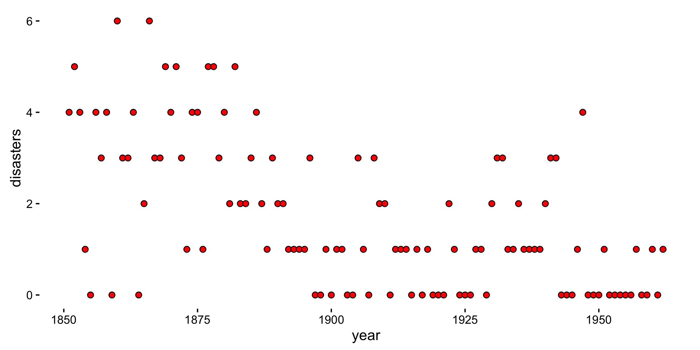
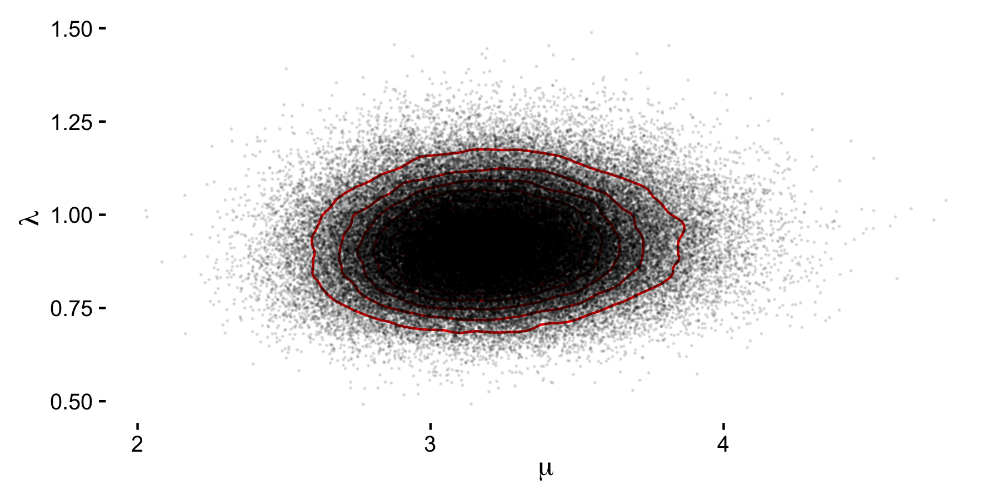

Bayesian estimation of changepoints
A common introductory problem in Bayesian changepoint detection is the record of UK coal mining disasters from 1851 to 1962. More information can be found in Carlin, Gelfand and Smith (1992).
As we can see from the plot below, the number of yearly disasters ranges from 0 to 6 and we will assume that at some point within this time range a change in the accident rate has occured.

The number of yearly disasters can be modelled as a Poisson with a unknown rate depending on the changepoint \(k\):
\[y_t \sim \text{Po}\left(\rho\right),\qquad \rho = \begin{cases} \mu, & \text{if}\ t=1,2,\dots,k \\\\ \lambda, & \text{if}\ t = k +1, k + 2, \dots,m \end{cases} \]
Our objective is to estimate in which year the change occurs (the changepoint \(k\)) and the accident rate before (\(\mu\)) and after (\(\lambda\)) the changepoint amounting to the parameter set \(\Phi = \left\lbrace\mu,\lambda,k\right\rbrace\).
We will use Crystal (with crystal-gsl) to perform the estimation.
We start by placing independent priors on the parameters:
- \(k \sim \mathcal{U}\left(0, m\right)\)
- \(\mu \sim \mathcal{G}\left(a_1, b_1\right)\)
- \(\lambda \sim \mathcal{G}\left(a_2, b_2\right)\)
For the remainder we'll set \(a_1=a_2=0.5\), \(c_1=c_2=0\) and \(d_1=d_2=1\).
The joint posterior of \(\Phi\) is then:
\[\pi\left(\Phi|Y\right) \propto p\left(Y|\Phi\right) \pi\left(k\right) \pi\left(\mu\right) \pi\left(\lambda\right), \]
where the likelihood is
\[\begin{aligned} p\left(Y|\Phi\right) &= \prod_{i=1}^{k} p\left(y_i|\mu,k\right) \prod_{i=k+1}^{m} p\left(y_i|\lambda,k\right) \\\\ &= \prod_{i=1}^{k} \frac{\mu^{y_i}e^{-\mu}}{y_i!} \prod_{i=k+1}^{m} \frac{\lambda^{y_i}e^{-\lambda}}{y_i!}. \end{aligned} \]
As such, the full joint posterior can be written as:
\[\begin{aligned} \pi\left(\Phi|Y\right) &\propto \prod_{i=1}^{k} \frac{\mu^{y_i}e^{-\mu}}{y_i!} \prod_{i=k+1}^{m} \frac{\lambda^{y_i}e^{-\lambda}}{y_i!} \left(\mu^{a_1-1} e^{-\mu b_1}\right) \left(\lambda^{a_2-1} e^{-\lambda b_2}\right) \frac{1}{m} \\\\ &= \mu^{a_1 + \sum_{1}^{k}y_i - 1}e^{-\mu\left(k+b\_1\right)} \lambda^{a_2 + \sum_{k+1}^{m}y_i - 1}e^{-\lambda\left(m-k+b_2\right)} \end{aligned}. \]
It follows that the full conditionals are, for \(\mu\):
\[\begin{aligned} \pi\left(\mu|\lambda,k,Y\right) &\propto \mu^{a_1 + \sum_{i=1}^{k}y_i-1}e^{-\mu\left(k+b_1\right)} \\\\ &= \mathcal{G}\left(a_1+\sum_{i=1}^{k}y_i, k + b_1\right) \end{aligned} \]
We can define the \(\mu\) update as:
def mu_update(data : Array(Int), k : Int, b1 : Float64) : Float64 Gamma.sample(0.5 + data[0..k].sum, k + b1) end
The full conditional for \(\lambda\) is:
\[\begin{aligned} \pi\left(\lambda|\mu,k,Y\right) &\propto \lambda^{a_2 + \sum_{i=k+1}^{m}y_i-1}e^{-\lambda\left(m-k+b_2\right)} \\\\ &= \mathcal{G}\left(a_2+\sum_{i=k+1}^{m}y_i, m - k + b_2\right), \end{aligned} \]
which we implement as:
def lambda_update(data : Array(Int), k : Int, b2 : Float64) : Float64 Gamma.sample(0.5 + data[(k+1)..M].sum, M - k + b2) end
The next step is to take
\[\begin{aligned} b_1 &\sim \mathcal{G}\left(a_1 + c_1,\mu + d_1\right) \\\\ b_2 &\sim \mathcal{G}\left(a_2 + c_2,\lambda + d_2\right), \end{aligned} \]
which we will implement as:
def b1_update(mu : Float64) : Float64 Gamma.sample(0.5, mu + 1.0) end def b2_update(lambda : Float64) : Float64 Gamma.sample(0.5, lambda + 1.0) end
And finally we choose the next year, \(k\), according to
\[p\left(k|Y,\Phi\right)=\frac{L\left(Y|\Phi\right)}{\sum_{k^{\prime}} L\left(Y|\Phi^{\prime}\right)} \]
where
\[L\left(Y|\Phi\right) = e^{\left(\lambda-\mu\right)k}\left(\frac{\mu}{\lambda}\right)^{\sum_i^k y_i} \]
implemented as
def l(data : Array(Int), k : Int, lambda : Float64, mu : Float64) : Float64 Math::E**((lambda - mu)*k) * (mu / lambda)**(data[0..k].sum) end
So, let's start by writing our initials conditions:
iterations = 100000 b1 = 1.0 b2 = 1.0 M = data.size # number of data points # parameter storage mus = Array(Float64).new(iterations, 0.0) lambdas = Array(Float64).new(iterations, 0.0) ks = Array(Int32).new(iterations, 0)
We can then cast the priors:
mus[0] = Gamma.sample(0.5, b1) lambdas[0] = Gamma.sample(0.5, b2) ks[0] = Random.new.rand(M)
And define the main body of our Gibbs sampler:
(1...iterations).map { |i| k = ks[i-1] mus[i] = mu_update(data, k, b1) lambdas[i] = lambda_update(data, k, b2) b1 = b1_update(mus[i]) b2 = b2_update(lambdas[i]) ks[i] = Multinomial.sample((0...M).map { |kk| l(data, kk, lambdas[i], mus[i]) }) }
Looking at the results, we see that the mean value of \(k\) is 38.761, which seems
to indicate that the change in accident rates occurred somewhere near \(1850+38.761\approx 1889\).
We can visually check this by looking at the graph below. Also plotted are the density for the accident rates before (\(\mu\)) and after (\(\lambda\)) the change.


Of course, one the main advantages of implementing the solution in Crystal is not only the boilerplate-free code, but the execution speed.
Compared to an equivalent implementation in R the Crystal code executed roughly 17 times faster.
| Language | Time (s) |
|---|---|
| R | 58.678 |
| Crystal | 3.587 |